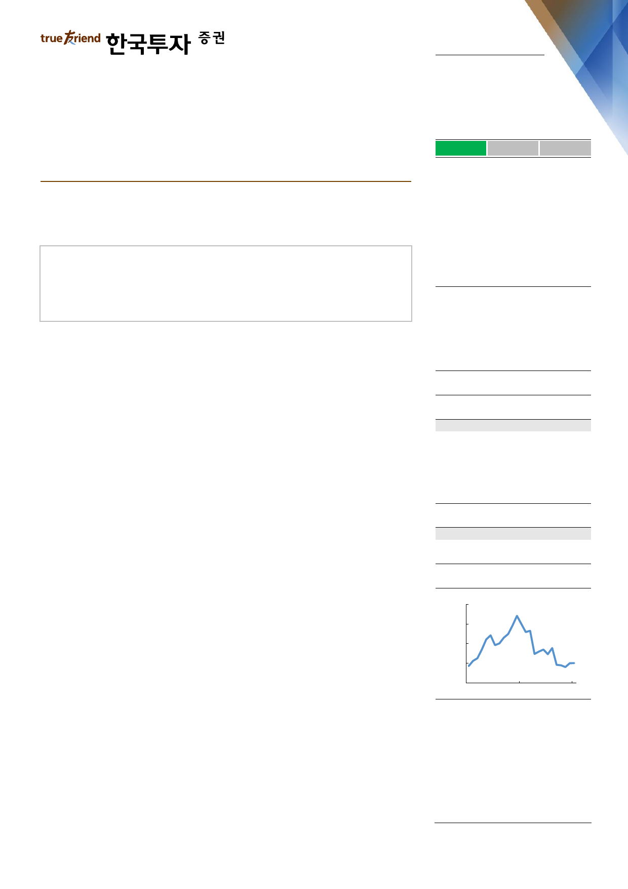

실적 Review
2019. 2. 11
KB금융(105560)
하 회
부 합
순이익의 컨센서스 대비를 의미
상 회
비은행 역량의 회복을 기다린다
계열사 실적 부진하며 4분기 순이익 컨센서스 하회
은행 성장성 및 건전성은 양호
자회사 실적과 판관비 수준을 먼저 확인할 필요
Facts : 증권, 손보 부진하며 순이익 컨센서스 크게 하회
4분기 순이익은 2,001억원으로 우리 추정치와 컨센서스를 각각 45%, 55% 하회
했다. 은행 보로금 1,850억원 지급은 예상됐지만, 희망퇴직 비용이 2,860억원으
로 예상치 2,040억원보다 컸고, KB증권과 KB손보 실적이 낮아졌던 기대치보다도
더욱 부진했기 때문이다. KB증권 4분기 순손실은 324억원으로 평분기에 비해 약
1,000억원 적었다. ELS 헤지운용 및 주식운용 손실이 크게 확대된 결과다. KB손
보 4분기 순이익도 14억원으로 평분기 대비 약 1,000억원 적었는데, 자보 손해율
악화, 사업비 증가, 투자손익 부진이 겹쳤다.
Pros & cons : 은행 실적은 전반적으로 양호
4분기 은행 원화대출금은 전분기대비 2.1% 증가했다. 전세자금대출, 협약대출, 소
호대출이 크게 증가한 덕분이다. 은행 NIM은 1.70%로 전분기대비 2bp 하락했다.
18년 누적으로 대출 증가율이 9.6%에 달하면서, 조달압박으로 정기예금 비중이
상승했기 때문이다. 다만 19년 연간 대출 증가율이 5% 선에서 안정화되며 19년
은행 NIM은 전년대비 1bp 상승할 전망이다. 4분기 그룹 대손율은 0.30%로 평분
기 0.2% 대비 다소 높았다. 향후 경기전망을 보수적으로 바꿔 선제적으로 부도율
등을 조정하면서 추가 충당금이 540억원 발생했기 때문이다. 이를 제외한 경상 대
손율은 0.24%였다. 이에 따라 19년 대손율은 0.25%로 양호한 수준을 유지할 전
망이다. 18년 DPS는 1,920원으로 17년과 동일한 수준에 그쳐 최근의 배당확대
기대감에 못 미쳤다. 4분기 실적 부진으로 18년 순이익이 전년대비 7% 감소했기
때문이다. 다만 18년 배당성향은 24.8%로 전년대비 1.6%p 상향조정되면서 시중
은행 전반의 배당성향 상승 기대감은 유효했다.
매수(유지)
목표주가: 67,000원(유지)
Stock Data
KOSPI(2/8)
주가(2/8)
시가총액(십억원)
발행주식수(백만)
52주 최고/최저가(원)
일평균거래대금(6개월, 백만원)
유동주식비율/외국인지분율(%)
주요주주(%) 국민연금
2,177
48,100
20,111
418
66,800/44,550
55,873
84.3/68.6
9.5
Valuation 지표
PER(x)
PBR(x)
ROE(%)
DY(%)
EPS(원)
BPS(원)
2017A
7.6
0.74
10.7
3.0
8,299
85,302
2018F
6.2
0.53
9.0
4.0
7,756
90,250
2019F
5.5
0.49
9.6
4.7
8,773
98,415
주가상승률
절대주가(%)
KOSPI 대비(%p)
1개월
5.7
(1.8)
6개월
(8.6)
(3.1)
12개월
(21.7)
(12.1)
주가추이
(원)
72,000
64,000
56,000
48,000
40,000
Feb-17
자료: FnGuide
Feb-18
Feb-19
Action : 목표주가 67,000원 유지
목표주가 67,000원을 유지한다. 자회사 실적과 비용효율성 측면에서 아쉽다. 다만
자산건전성이 양호하고 순이자이익 증가세는 꾸준하다. 판관비가 적정 수준에서
통제되고, 카드를 제외한 기타 자회사들의 실적 반등이 예상되는 점을 고려해 19
년 순이익을 전년대비 12% 증가한 3.4조원으로 전망한다.
백두산, CFA
doosan@truefriend.com